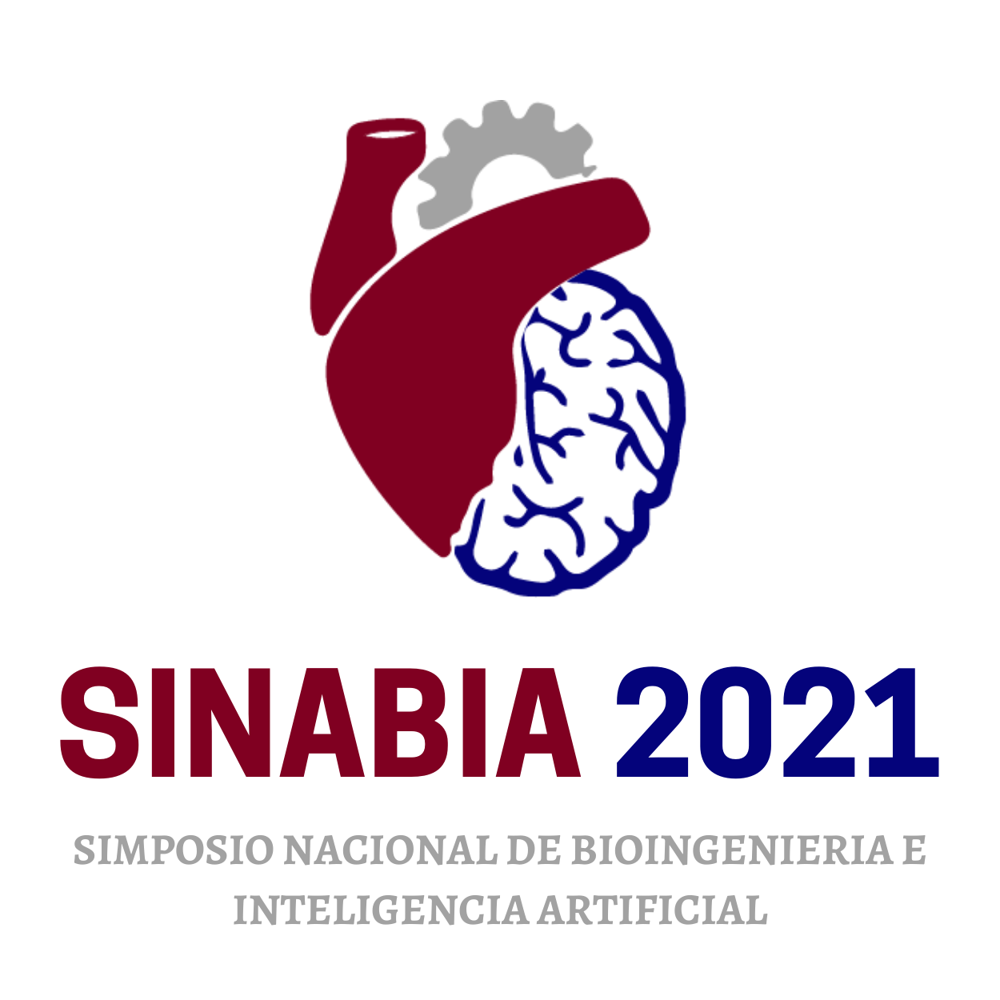

2do Simposio Nacional de Bioingenieria e Inteligencia Artificial
RegistrarmeEl Simposio Nacional de Bioingeniería e Inteligencia Artificial (SINABIA) es un evento organizado por el Capítulo Estudiantil de la Association for the Advancement of Artificial Intelligence (AAAI) con sede en México (AAAIMX). Organizado por primera vez en 2019, su objetivo es acercar a los estudiantes al área de la Inteligencia Artificial (IA) y sus potenciales aplicaciones en ingeniería, particularmente biongenierías, entre las cuales destacan biomédica, mecatrónica, robótica, electrónica, química, sistemas computacionales, y biotecnología. El SINABIA tiene también el propósito de contribuir a causas sociales a través del apoyo a organizaciones locales y estatales.

Agradecemos el apoyo económico por parte del Artificial Intelligence Journal (AIJ) para llevar a
cabo el 2° Simposio Nacional de Bioingeniería e Inteligencia Artificial (SINABIA) 2021, el cual se
llevara a cabo los días 9 al 13 de septiembre del 2021.
La AIJ es una revista de Inteligencia Artificial cuyo contenido se conforma de artículos sobre
aspectos amplios de la Inteligencia Artificial (IA) que constituyen avances en el campo general que
incluyen la cognición de la IA, el razonamiento e inferencia automatizados, el razonamiento basado
en casos, el razonamiento de sentido común, la visión por computadora, la restricción, etc.
La revista busca fomentar el interés en el área de la IA, los avances que ha tenido, su amplia área
de estudio, y los avances positivos que ha proporcionado al mundo.

Por motivos de la pandemia COVID-19, para los eventos del SINABIA 2021 que puedan llevarse a cabo de
manera presencial, se contará con diferentes módulos y filtros de sanitización. Las ponencias y
talleres presenciales tendrán un cupo máximo de 15 personas, mientras que en los virtuales se tendrá
una audiencia máxima de 50 personas. Sin embargo, se contará con transmisiones en vivo por Facebook
para el público en general.
Las medidas sanitarias para ingresar a las actividades presenciales del evento incluyen:
Uso adecuado del cubrebocas.
No presentar ningún síntoma asociado a la enfermedad COVID-19.
Pasar por los filtros de sanitización.
Mantener la sana distancia.
Únete a nosotros y se voluntario para colaborar en cualquier área que desees